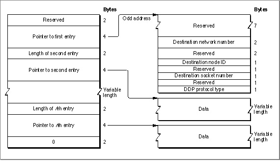

Legacy Document
Important: The information in this document is obsolete and should not be used for new development.
Important: The information in this document is obsolete and should not be used for new development.


Creating a DDP Write-Data Structure
When you use thePWriteDDPfunction to send a DDP packet to another socket, you provide a pointer to a write-data structure that you have already created. A write-data structure contains a series of pairs of length words and pointers and ends with a 0 word. Each pair indicates the length and location of a portion of the data that constitutes the packet to be sent over the network. The first entry in the write-data structure consists of only a pointer. It does not include a length word, because the length is always the same.The first pointer indicates a 16-byte header block, which must start at an odd address. You fill in the destination network number, destination node ID, destination socket number, and DDP protocol type, and the .MPP driver fills in the other fields of the packet header. DDP protocol types 1 through 15 are reserved for use by Apple. A DDP packet may have a maximum of 586 bytes of data. Figure 7-4 shows the write-data structure and the header block.
Because the first pointer in the write-data structure must point to an odd address, it is difficult to use Pascal to create a write-data structure. If you are programming in Pascal, you can use the
BuildDDPwdsprocedure to create a write-data structure. You must provide a 17-byte buffer for the header block, a 14-byte buffer to hold the write-data structure, and a pointer to the data you want to send. The header block is only 16 bytes, but because it begins on an odd address, the first byte is not used. The write-data structure created by theBuildDDPwdsprocedure is 14 bytes long, consisting of only a pointer to the header, a length-pointer pair for the data block, and the terminating 0 word. Although a write-data structure allows you to divide the data into as many blocks as you wish, theBuildDDPwdsprocedure assumes that the data is in a single block.In most cases, if you are using DDP directly to send data across a network, a single block of data should be adequate. However, if you are implementing a protocol on top of DDP and you want to send blocks of data that are stored separately as parts of the same datagram, you will have to build your own write-data structure that includes multiple pairs of pointers and lengths. For a description of the write-data structure that you need to build in this case, see "The Write-Data Structure" on page 7-35. Notice that the pointer to the first entry indicates an odd address and that there is no length word for the
first entry.Figure 7-4 DDP write-data structure
